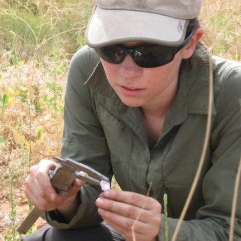

Photo: Melissa L. Gray |
I am a doctoral fellow in Dr. Norma Fowler's lab at the University of Texas at Austin, graduating in August, 2017.
My research interests revolve around plant community responses to wildland fire and producing research that can
help land managers reach conservation and restoration goals. I use a combination of fieldwork, GIS, and statistical
modeling to explore the relationships between pre- and post-disturbance plant communities.